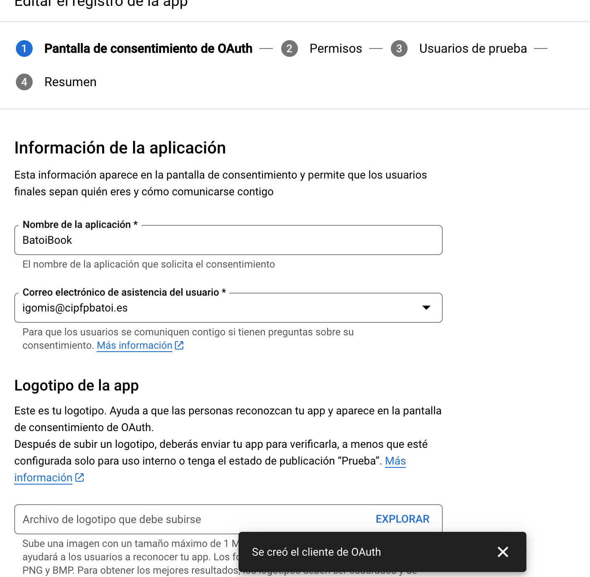
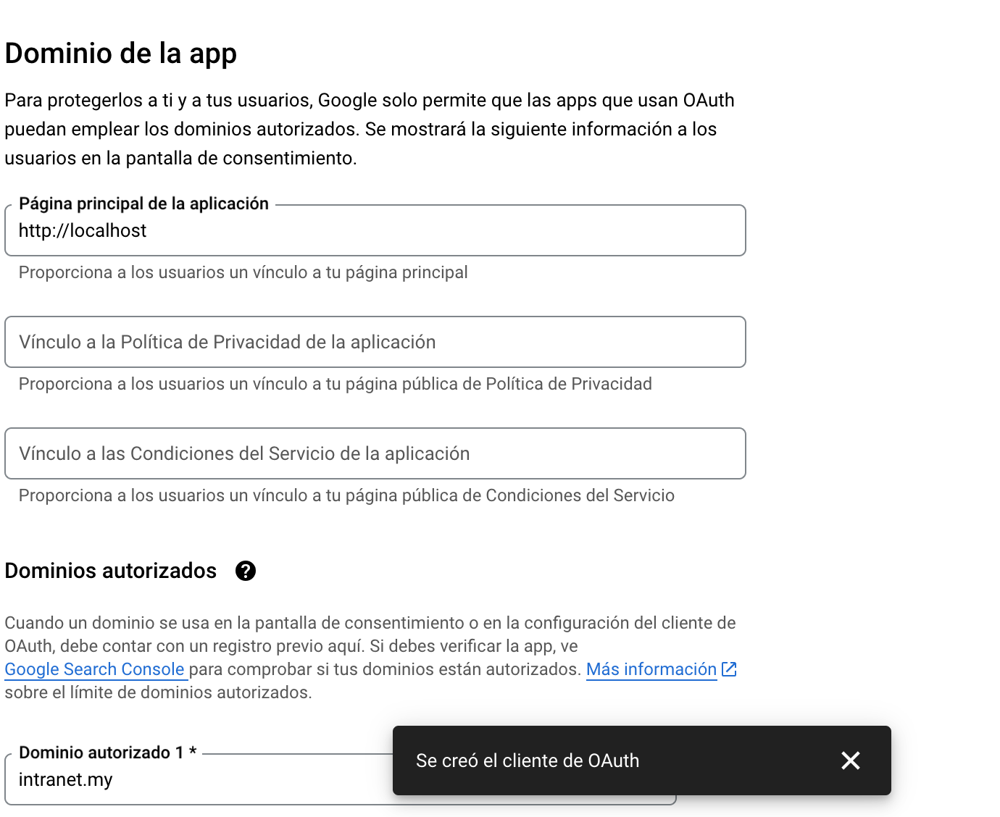
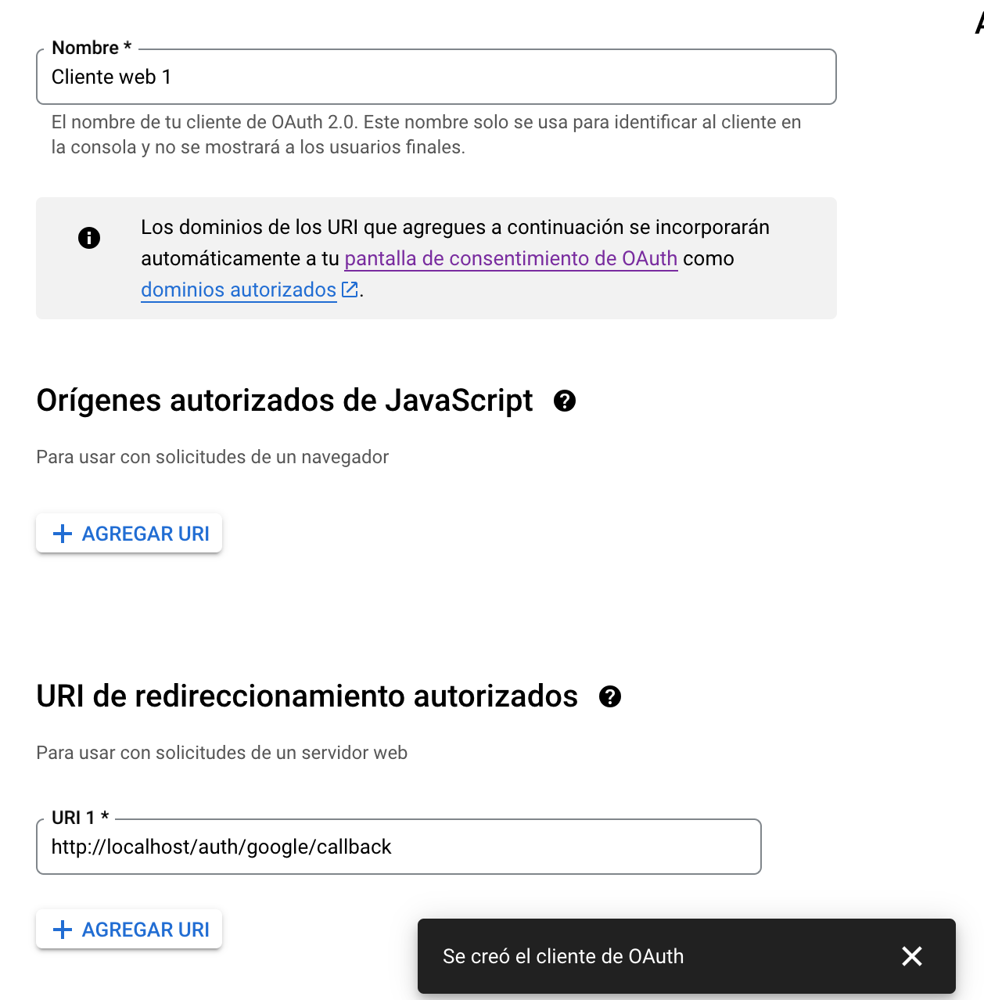

Webs híbrides¶
Duració estimada: 8 sessions
Característiques de les webs híbrides¶
Les aplicacions web híbrides, també conegudes com a "mashups", són una combinació de dades i/o funcionalitats provinents de diverses fonts per a crear un nou tipus d'aplicació o servei. Les seues característiques principals són:
- Integració de Dades de Diversos Orígens: Les aplicacions web híbrides aprofiten dades i funcionalitats de múltiples fonts, com ara serveis web, APIs, i altres recursos en línia. Això permet combinar i reutilitzar recursos existents de manera creativa per a desenvolupar aplicacions més complexes i funcionals.
- Ús de Serveis Web i APIs: Moltes d'aquestes aplicacions utilitzen dades accessibles a través de serveis web, com els que ofereixen empreses com Google, Yahoo!, Flickr, Microsoft, i Amazon. Aquestes dades es troben sovint en formats com JSON o XML i es poden accedir i manipular mitjançant APIs específiques.
- Sindicació Web (RSS/Atom): Algunes aplicacions web híbrides fan ús de protocols de sindicació web, com RSS o Atom, per accedir a continguts actualitzats de manera regular. Aquests protocols simplifiquen el procés de compartir i distribuir continguts web.
- Dades Internes: A més de les fonts externes, les aplicacions web híbrides poden incloure dades internes generades i gestionades per l'entitat propietària de l'aplicació, com podrien ser les dades corporatives o de negoci.
- Web Scraping: Encara que és menys comú, algunes aplicacions utilitzen tècniques d'enginyeria inversa, com el web scraping, per extreure dades des de llocs web. Això pot ser útil per obtenir informació com els preus dels productes en les botigues en línia.
Aquesta actualització reflecteix l'evolució constant en el camp del desenvolupament web i la integració de tecnologies, destacant la importància de les fonts diverses de dades i la capacitat de combinar-les de forma innovadora en el disseny d'aplicacions web híbrides.
Utilització de repositoris d'informació¶
Per a poder reutilitzar codi i informació cal que tingem en conte les següents consideracions:
- Integració de Serveis Web de Tercers: En el desenvolupament d'aplicacions web híbrides, és comú utilitzar serveis proporcionats per tercers. Aquests serveis poden oferir funcionalitats específiques que enriquiran l'aplicació sense necessitat de desenvolupar-les des de zero. Un exemple podria ser l'ús de l'API de Google Maps per mostrar la ubicació geogràfica de les franquícies d'una empresa en un mapa.
- Desenvolupament d'Aplicacions Pràctiques: En aquest context, es posa l'accent en el desenvolupament d'aplicacions que faciliten processos específics, com podria ser la gestió d'enviaments en una botiga en línia. Aquest tipus d'aplicació pot millorar significativament l'experiència dels usuaris i l'eficiència de les operacions de l'empresa.
- Reconeixement de Necessitats i Oportunitats: És important identificar funcionalitats que poden ser útils per als usuaris, fins i tot quan aquests no les han sol·licitat explícitament. Aquesta anticipació de necessitats pot ser un factor clau en el desenvolupament d'aplicacions web híbrides exitoses.
- Condicions i Límits en l'Ús de Serveis de Tercers: Quan s'utilitzen serveis de tercers, cal tenir en compte les condicions i límits que aquests imposen. Això inclou restriccions d'ús, límits de sol·licituds, entre d'altres aspectes legals i tècnics.
- Adquisició d'Experiència en Desenvolupament Web: El desenvolupament d'aquestes aplicacions també serveix com una oportunitat per adquirir experiència pràctica en l'àmbit del desenvolupament web, millorant així les habilitats tècniques dels desenvolupadors.
Per exemple podriem desenvolupar:
- Integració de Google Maps API: Imaginem que estàs desenvolupant una aplicació web per a una cadena de restaurants. Pots integrar l'API de Google Maps per mostrar la ubicació de tots els restaurants en un mapa interactiu. Els usuaris poden buscar el restaurant més proper, obtenir direccions, i fins i tot veure imatges del lloc.
- Gestió d'Enviaments amb APIs de Logística: Per una botiga en línia, pots integrar APIs de serveis de missatgeria com UPS, FedEx o DHL. Això permet als usuaris fer seguiment dels seus enviaments en temps real, calcular costos d'enviament, i gestionar devolucions de manera eficient.
- Integració de Passarel·les de Pagament: En una aplicació d'e-commerce, l'ús de passarel·les de pagament com Stripe, PayPal, o Square és essencial. Això no només ofereix una solució de pagament segura als usuaris, sinó que també simplifica la gestió financera de la botiga.
- Ús de APIs de Xarxes Socials: Podries integrar APIs de xarxes socials com Facebook, Twitter, o Instagram per permetre als usuaris compartir productes o experiències directament des de la teva aplicació. Això pot augmentar la visibilitat i l'engagement del teu negoci.
- Serveis Meteorològics Integrats: Per a una aplicació d'activitats a l'aire lliure, com una app de senderisme, integrar dades meteorològiques en temps real mitjançant APIs com OpenWeatherMap pot ser molt útil. Els usuaris podrien planificar les seves activitats basant-se en les condicions meteorològiques actuals i les previsions.
- Recollida d'Opinions amb APIs de Ressenyes: En una aplicació per a hotels o restaurants, integrar un sistema de recollida d'opinions com Yelp o TripAdvisor pot ajudar a obtenir feedback valuós dels clients i millorar la qualitat del servei.
Autenticació amb Google¶
Configuració de l'Autenticació amb Google en Laravel¶
1. Instal·lar Laravel Socialite¶
Laravel Socialite és la biblioteca oficial per gestionar l'autenticació amb proveïdors socials.
1. Instal·la Socialite¶
composer require laravel/socialite
php artisan vendor:publish --provider="Laravel\Socialite\SocialiteServiceProvider"
2. Configura Google API¶
- Accedeix a la Consola de Desenvolupadors de Google.
- Crea un nou projecte o selecciona un projecte existent.
- Activa l'API "Google+ API" o "Google Identity Services".
-
Crea una credencial d'OAuth 2.0 i configura:
- Tipus d'aplicació: Aplicació web.
- URI de redirecció autoritzat:
http://localhost/auth/google/callback
-
Copia el Client ID i el Client Secret.
3. Configura les Variables d'Entorn¶
Afegeix les credencials al fitxer .env:
GOOGLE_CLIENT_ID=your-client-id
GOOGLE_CLIENT_SECRET=your-client-secret
GOOGLE_REDIRECT=http://localhost/auth/google/callback
Afegeix la configuració de Google al fitxer config/services.php:
'google' => [
'client_id' => env('GOOGLE_CLIENT_ID'),
'client_secret' => env('GOOGLE_CLIENT_SECRET'),
'redirect' => env('GOOGLE_REDIRECT'),
],
4. Configura les Rutes¶
Defineix les rutes necessàries al fitxer routes/web.php:
use App\Http\Controllers\AuthController;
Route::get('/auth/google/redirect', [AuthController::class, 'redirectToGoogle'])->name('google.redirect');
Route::get('/auth/google/callback', [AuthController::class, 'handleGoogleCallback'])->name('google.callback');
5. Crea el Controlador¶
Crea un controlador per gestionar l'autenticació amb Google amb els seguents mètodes:
namespace App\Http\Controllers;
use Laravel\Socialite\Facades\Socialite;
use Illuminate\Support\Facades\Auth;
use App\Models\User;
class AuthController extends Controller
{
public function redirectToGoogle()
{
return Socialite::driver('google')->redirect();
}
public function handleGoogleCallback()
{
$googleUser = Socialite::driver('google')->stateless()->user();
// Cerca l'usuari o crea'l si no existeix
$user = User::firstOrCreate(
['email' => $googleUser->getEmail()],
[
'name' => $googleUser->getName(),
'google_id' => $googleUser->getId(),
'avatar' => $googleUser->getAvatar(),
'password' => bcrypt(str()->random(24)), // Contrassenya aleatòria
]
);
// Inicia sessió amb l'usuari
Auth::login($user);
return redirect('/home'); // Redirigeix a la pàgina principal
}
}
6. Modifica el Model User per afegir els camps nou i modifica la migració¶
7. Prova l'Autenticació¶
- Accedeix a l'URL:
http://localhost/auth/google/redirect - Segueix el procés d'autenticació amb Google.
Difusió d'Esdeveniments en Temps Real amb WebSockets¶
Els WebSockets permeten implementar interfícies d'usuari que s'actualitzen en temps real de manera eficient. A diferència del polling constant, els WebSockets envien dades del servidor al client només quan hi ha canvis, millorant el rendiment i l'experiència d'usuari.
Funcionament¶
- Canals: Els clients es connecten a canals amb noms específics al frontend.
- Esdeveniments: L'aplicació Laravel envia esdeveniments a aquests canals des del backend. Els esdeveniments poden incloure dades que el frontend utilitza per actualitzar la interfície.
Drivers de Difusió Suportats¶
Laravel proporciona tres opcions per gestionar WebSockets:
- Laravel Reverb: Solució autogestionada i integrada amb Laravel.
- Pusher Channels: Servei gestionat per a WebSockets.
- Ably: Plataforma avançada per a comunicacions en temps real.
Implementació Bàsica en el servidor¶
Laravel facilita la difusió d'esdeveniments (event broadcasting) gràcies a un driver de difusió que envia els esdeveniments al client mitjançant Laravel Echo (una biblioteca JavaScript).
Configuració¶
php artisan install:broadcasting
Aquesta ordre:
- Crearà el fitxer
config/broadcasting.php. - Crearà el fitxer
routes/channels.php, on pots registrar rutes d'autorització i callbacks per als canals de difusió.
Configuració Bàsica de pusher¶
Si vols utilitzar Pusher Channels per a la difusió d'esdeveniments, segueix aquests passos:
- Instal·la el paquet de PHP de Pusher Channels amb Composer:
composer require pusher/pusher-php-server
- Defineix les credencials de Pusher Channels al fitxer .env:
BROADCAST_DRIVER=pusher
PUSHER_APP_ID=19143960
PUSHER_APP_KEY=070b902204f2ac2a3b220
PUSHER_APP_SECRET=6687bd960e437d3c2a550
PUSHER_APP_CLUSTER=eu
VITE_PUSHER_APP_KEY=070b902204f2ac2a3b220
VITE_PUSHER_APP_CLUSTER=eu
i configura el driver de difusió a Pusher en el fitxer config/broadcasting.php:
'pusher' => [
'driver' => 'pusher',
'key' => env('PUSHER_APP_KEY'),
'secret' => env('PUSHER_APP_SECRET'),
'app_id' => env('PUSHER_APP_ID'),
'options' => [
'cluster' => env('PUSHER_APP_CLUSTER'),
'useTLS' => true,
],
],
- Configuració de Laravel Echo
Si no està instal·lat, instal·la Laravel Echo:
npm install --save-dev laravel-echo pusher-js
npm run build
import Echo from 'laravel-echo';
import Pusher from 'pusher-js';
window.Pusher = Pusher;
window.Echo = new Echo({
broadcaster: 'pusher',
key: import.meta.env.VITE_PUSHER_APP_KEY,
cluster: import.meta.env.VITE_PUSHER_APP_CLUSTER,
forceTLS: true
});
al front-end, afegeix el següent codi per connectar amb el servidor de WebSockets:
Echo.channel('channel-name')
.listen('EventName', (e) => {
console.log(e);
});
Defineix canals en routes/channels.php. Per exemple, un canal privat:
Broadcast::channel('channel-name', function ($user) {
return true; // Autorització
});
- Disparar Esdeveniments en Temps Real
Crea esdeveniments que implementen ShouldBroadcast i defineix en quin canal s'han d'emetre.
class EventName implements ShouldBroadcast
{
public function broadcastOn()
{
return new Channel('channel-name');
}
}
- Tots els esdeveniments de difusió s'envien a través de treballs en cua (queued jobs).
- És necessari configurar i executar un treballador de cua per evitar que la resposta de l'aplicació es veja afectada durant la difusió dels esdeveniments:
php artisan queue:work
Integració amb ChatGPT API¶
Registra't i Obté les Credencials de l'API¶
- Registra't a OpenAI: Visita el lloc web d'OpenAI i crea un compte si encara no en tens un.
- Accedeix a la Secció d'API: Un cop registrat, busca l'opció per accedir a les credencials de l'API.
- Crea un Nou Projecte/API Key: Segueix les instruccions per crear un nou projecte i genera una clau API. Aquesta clau et permetrà realitzar peticions a l'API de ChatGPT.
Configura les Credencials de l'API¶
Guarda les Credencials: Un cop tinguis la clau API, hauràs de guardar-la de manera segura. Actualitza el Fitxer .env: Afegeix la teva clau API al teu fitxer .env de Laravel. Això manté les teves credencials segures i separades del teu codi font.
OPENAI_API_KEY=tua_clau_api
En el teu fitxer de configuració (per exemple, config/services.php), afegeix una entrada per a OpenAI.
'openai' => [
'api_key' => env('OPENAI_API_KEY'),
]
Creació d'un service per a OpenAI¶
Per a això creem un directori Services i un fixer ChatGPTService.php
namespace App\Services;
use GuzzleHttp\Client;
use Illuminate\Support\Facades\Log;
class ChatGPTService
{
public static function getChatResponse($question)
{
try {
$client = new Client([
'base_uri' => 'https://api.openai.com/v1/',
'headers' => [
'Authorization' => 'Bearer ' . config('services.openai.api_key'),
'Content-Type' => 'application/json',
],
]);
$response = $client->post('chat/completions', [
'json' => [
'model' => 'gpt-3.5-turbo',
'messages' => [
['role' => 'system', 'content' => 'Ets un fan del Barça.'],
['role' => 'user', 'content' => $question],
],
'max_tokens' => 250,
],
]);
$body = json_decode($response->getBody()->getContents(), true);
$message = '';
foreach ($body['choices'] as $r){
if ($r['message']['role'] == 'assistant') {
$message .= $r['message']['content'];
}
}
return $message;
} catch (\Exception $e) {
Log::error('Error en la resposta de ChatGPT: ' . $e->getMessage());
return ['error' => 'No s\'ha pogut obtenir una resposta.'];
}
}
}
Ara la forma de utilitzar-lo de forma bàsica és la següent:
$descripcio = ChatGPTService::getChatResponse('Dona una descripció del '.$equip->nom.' de Futbol Femení');
A partir d'ahi hem de estudiar la documentació de l'API per a poder fer peticions i tractar les respostes. Al mateix temps crearem les rutes, les vistes i els metodes necessaries per incrementar la funcionalitat de la nostra aplicació.
Gestió de pagaments¶
La primera decisió que hem de pendre es triar la passarel·la de Pagament: Hi ha moltes opcions com Stripe, PayPal, PayU, Braintree, Square, Authorize.Net... Totes solen tindre entorn de proves(sanbox) on fer transaccions fictícies per a provar el funcionament de la passarel·la de pagament.
PayPal¶
Per permetre que un usuari pague amb el seu compte PayPal Sandbox a un compte Business de Sandbox en una aplicació Laravel, hauràs de seguir una sèrie de passos. Aquests passos impliquen la configuració del teu entorn de Sandbox a PayPal i la integració amb la teva aplicació Laravel utilitzant el paquet paypal/rest-api-sdk-php o una altra biblioteca similar. Aquí tens una guia pas a pas:
-
Configura els Comptes Sandbox: Assegura't que tens dos comptes en PayPal Sandbox: un compte personal (que simula el comprador) i un compte Business (que simula el venedor).
-
Instal·la el Paquet de PayPal en Laravel: Utilitza Composer per instal·lar el paquet
paypal/rest-api-sdk-phpo una altra biblioteca de PayPal compatible amb Laravel. -
Configura les Credencials de Sandbox en Laravel: Obté les credencials del teu compte Business de Sandbox (ID de client i secret) i configura-les en el teu projecte Laravel, normalment a través del fitxer .env. i configura el `services.php
'paypal' => [
'client_id' => env('PAYPAL_CLIENT_ID'),
'client_secret' => env('PAYPAL_CLIENT_SECRET'),
],
- Crea un Context d'API de PayPal: Utilitza les credencials del teu compte Business de Sandbox per crear un objecte ApiContext. Aquest objecte s'utilitzarà per a realitzar crides a l'API de PayPal.
use PayPal\Rest\ApiContext;
use PayPal\Auth\OAuthTokenCredential;
// ...
public function createPayment()
{
$apiContext = new ApiContext(new OAuthTokenCredential(
env('PAYPAL_CLIENT_ID'), // ClientID
env('PAYPAL_SECRET') // ClientSecret
)
);
// Configura el `ApiContext` segons les teves necessitats
$apiContext->setConfig([
'mode' => 'sandbox', // Mode Sandbox per a proves
// Altres configuracions...
]);
// Aquí va la resta de la teva lògica de pagament...
}
- Implementa la Lògica de Pagament:
* Desenvolupa la lògica en els teus controladors Laravel per crear sol·licituds de pagament. Això inclou la creació d'objectes de pagament amb detalls com l'import, la moneda, i la descripció. * Redirigeix l'Usuari a PayPal: Quan un usuari iniciï un pagament, redirigeix-lo a la pàgina de pagament de PayPal utilitzant l'URL proporcionada per la biblioteca. L'usuari iniciarà sessió amb el seu compte personal de Sandbox per completar el pagament. * Gestiona la Resposta de PayPal: Després que l'usuari completi el pagament, serà redirigit de tornada a la teva aplicació. Necessitaràs gestionar aquesta resposta per confirmar la transacció. * Prova el Procés de Pagament: Realitza proves utilitzant els teus comptes de Sandbox per assegurar-te que tot funciona com s'espera. Això inclou iniciar un pagament amb el compte personal de Sandbox i rebre el pagament en el compte Business de Sandbox. * Revisa i Depura: Comprova que les transaccions es mostren correctament en els panells de control de Sandbox tant del comprador com del venedor. Depura qualsevol problema que puguis trobar.
Exemple de creació d'un pagament amb el SDK de PayPal:
use PayPal\Api\Amount;
use PayPal\Api\Payer;
use PayPal\Api\Payment;
use PayPal\Api\RedirectUrls;
use PayPal\Api\Transaction;
use PayPal\Rest\ApiContext;
use PayPal\Auth\OAuthTokenCredential;
class PaymentController extends Controller
{
private $apiContext;
public function __construct()
{
$this->apiContext = new ApiContext(
new OAuthTokenCredential(
env('PAYPAL_SANDBOX_CLIENT_ID'), // ClientID
env('PAYPAL_SANDBOX_SECRET') // ClientSecret
)
);
}
public function createPayment()
{
$payer = new Payer();
$payer->setPaymentMethod('paypal');
$amount = new Amount();
$amount->setTotal('10.00'); // Defineix l'import del pagament
$amount->setCurrency('EUR'); // Defineix la moneda
$transaction = new Transaction();
$transaction->setAmount($amount);
$transaction->setDescription('Descripció del pagament');
$redirectUrls = new RedirectUrls();
$redirectUrls->setReturnUrl(url('/payment/success')) // URL de retorn en cas d'èxit
->setCancelUrl(url('/payment/cancel')); // URL de retorn en cas de cancel·lació
$payment = new Payment();
$payment->setIntent('sale')
->setPayer($payer)
->setTransactions([$transaction])
->setRedirectUrls($redirectUrls);
try {
$payment->create($this->apiContext);
return redirect()->away($payment->getApprovalLink());
} catch (Exception $e) {
// Gestiona l'error aquí
return back()->with('error', 'Hi ha hagut un problema en processar el pagament');
}
}
public function successPayment(Request $request)
{
$paymentId = $request->get('paymentId');
$payerId = $request->get('PayerID');
if (empty($paymentId) || empty($payerId)) {
// Redirigeix a una pàgina d'error o mostra un missatge
return redirect('/')->with('error', "El pagament no s'ha pogut verificar.");
}
$payment = Payment::get($paymentId, $this->apiContext);
$execution = new PaymentExecution();
$execution->setPayerId($payerId);
try {
// Executa el pagament
$result = $payment->execute($execution, $this->apiContext);
// Comprova que el pagament s'ha completat amb èxit
if ($result->getState() == 'approved') {
// Aquí pots processar la informació de la transacció,
// com ara actualitzar la base de dades, etc.
return redirect('/')->with('success', 'Pagament completat amb èxit.');
}
} catch (Exception $e) {
// Gestiona els errors aquí
return redirect('/')->with('error', 'Hi ha hagut un problema en processar el teu pagament.');
}
return redirect('/')->with('error', "El pagament no s'ha pogut completar.");
}
// Aquí pots afegir els mètodes per gestionar la cancel·lació del pagament
}
Route::get('/payment/create', 'PaymentController@createPayment');
Route::get('/payment/success', 'PaymentController@successPayment');
Route::get('/payment/cancel', 'PaymentController@cancelPayment');
És important seguir aquests passos detalladament i referir-se a la documentació específica de la biblioteca que estàs utilitzant per obtenir instruccions detallades i exemples de codi. La clau està en la correcta configuració i integració de les credencials de PayPal Sandbox i la correcta gestió de les respostes de l'API de PayPal.
Notes Importants Aquest exemple és molt bàsic i només per a fins educatius. En un entorn de producció, hauràs de gestionar molts altres aspectes com la verificació de seguretat, el maneig d'errors més detallat, i la integració amb la base de dades. Assegura't de provar aquest codi en l'entorn de Sandbox de PayPal abans de considerar la seva implementació en producció. Personalitza els imports del pagament (import, moneda, descripció) segons les necessitats del teu projecte.
Exemple de reutilització de codi¶
Autenticació amb Google¶
Pas 1 - Instal·lació¶
Instal·lem el paquet de Google:
composer require laravel/socialite
Pas 2 - Crear credencials a Google cloud¶
- Obre la Consola de Google Cloud: Visita Google Cloud Console.
Crear un Projecte a Google Cloud
- Crea un Nou Projecte: En la consola, crea un nou projecte si encara no en tens cap.
- Navega al Projecte: Un cop creat, selecciona el projecte per a configurar les credencials.
Configurar OAuth Consent Screen
- Vés a "APIs & Services > OAuth consent screen".
- Selecciona l'usuari extern i omple els detalls necessaris. .
- Afegeix la informació del teu domini i els detalls de l'aplicació. .
Crear Credencials
- Vés a "APIs & Services > Credentials".
- Clica a "Create Credentials" i selecciona "OAuth client ID".
- Selecciona l'aplicació web com a tipus d'aplicació.
 .
. - Afegeix les URL de redirecció autoritzades des de Laravel (p. ex., http://localhost/auth/google/callback per a l'entorn de desenvolupament).
- Obté l'ID de Client i el Secret de Client: Després de crear les credencials, anota l'ID de client i el secret que Google proporciona. .
Pas 3 - Configuració de Socialite per a Google¶
GOOGLE_CLIENT_ID=3792956990940-bat7pikhu9a8piq93jncgcursmf7isg3.apps.googleusercontent.com
GOOGLE_CLIENT_SECRET=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0
GOOGLE_REDIRECT=http://localhost/auth/google/callback
'google' => [
'client_id' => env('GOOGLE_CLIENT_ID'),
'client_secret' => env('GOOGLE_CLIENT_SECRET'),
'redirect' => env('GOOGLE_REDIRECT'),
],
Pas 4 - Creació de Rutes i Controladors¶
Defineix rutes en routes/web.php per a redirigir cap a Google i per al callback.
Route::get('auth/google', [LoginController::class, 'redirectToGoogle'])->name('auth.google');
Route::get('auth/google/callback', [LoginController::class, 'handleGoogleCallback'])->name('auth.google.callback');
En LoginController, afegeix la lògica per a redirigir a l'usuari cap a Google i manejar el callback.
redirectToGoogle: Redirigeix l'usuari a la pàgina d'autenticació de Google. handleGoogleCallback: Processa la resposta de Google, crea o troba un usuari, i genera un token de Sanctum.
<?php
// En LoginController
public function redirectToGoogle()
{
return Socialite::driver('google')->redirect();
}
public function handleGoogleCallback()
{
try {
$googleUser = Socialite::driver('google')->stateless()->user();
// Cerca o crea l'usuari a la base de dades
$user = User::updateOrCreate(
['email' => $googleUser->email],
[
'name' => $googleUser->name,
'google_id' => $googleUser->id,
'avatar' => $googleUser->avatar,
]
);
// Autentica l'usuari
Auth::login($user);
// Generar token Sanctum
// Si volem autenticar en l'API podriem generar un token
$token = $userr->createToken('Personal Access Token')->plainTextToken;
// Redirigir l'usuari amb el token
return view('auth.success', ['token' => $token]); // Asumint que tens una vista 'auth.success'
} catch (\Exception $e) {
// Maneig d'errors
return view('auth.error', ['error' => $e->getMessage()]); // Asumint que tens una vista 'auth.error'
}
}
protected $fillable = [
'name',
'email',
'password',
'google_id',
'avatar',
];
I afegir el camp google_id i avatar a la migració de la base de dades
Pas 5 - Creació de les vistes de comprovació¶
Crea dues vistes en resources/views/auth: success.blade.php i error.blade.php.
{{-- resources/views/auth/success.blade.php --}}
<!DOCTYPE html>
<html lang="en">
<head>
<meta charset="UTF-8">
<title>Autenticació Exitosa</title>
</head>
<body>
<h1>Benvingut/da!</h1>
<p>La teua autenticació ha sigut exitosa.</p>
<p>El teu token d'accés és: {{ $token }}</p>
</body>
</html>
{{-- resources/views/auth/error.blade.php --}}
<!DOCTYPE html>
<html lang="en">
<head>
<meta charset="UTF-8">
<title>Error d'Autenticació</title>
</head>
<body>
<h1>Error d'Autenticació</h1>
<p>Ha ocorregut un error durant el procés d'autenticació: {{ $error }}</p>
</body>
</html>
Pas 6. Inclou l'enllaç en el login per redirigir a google¶
<a href="{{ route('auth.google') }}">Inicia sessió amb Google</a>
Actualització de la classificació en temps real.¶
Després de configurar el pusher i el Laravel Echo, podem implementar que la classificació s'actualitze de forma automàtica quan es canvie un resultat.
- Afegir el codi per a gestionar l'escolta en el frontend:
window.Echo.channel('futbol-femeni')
.listen('.PartitActualitzat', (data) => {
console.log('Esdeveniment rebut:', data);
Livewire.dispatch('PartitActualitzat',data);
});
- Modificar el routes/channel.php per a autoritzar l'accés al canal:
use Illuminate\Support\Facades\Broadcast;
Broadcast::channel('futbol-femeni', function () {
return true;
});
- Modificar el component livewire per a gestionar l'esdeveniment rebut:
#[On('PartitActualitzat')]
public function actualitzarClassificacio()
{
$this->calcularClassificacio();
$this->dispatch('$refresh');
}
- Crear el esdeveniment que s'enviarà al canal:
namespace App\Events;
use Illuminate\Broadcasting\Channel;
use Illuminate\Broadcasting\InteractsWithSockets;
use Illuminate\Contracts\Broadcasting\ShouldBroadcast;
use Illuminate\Foundation\Events\Dispatchable;
use Illuminate\Queue\SerializesModels;
class PartitActualitzat implements ShouldBroadcast
{
use Dispatchable, InteractsWithSockets, SerializesModels;
public $partit;
public function __construct($partit)
{
$this->partit = $partit;
}
public function broadcastOn()
{
return new Channel('futbol-femeni');
}
public function broadcastAs()
{
return 'PartitActualitzat';
}
}
- Disparar l'esdeveniment des del model:
protected static function booted()
{
static::updated(function ($partit) {
event(new PartitActualitzat($partit));
});
}
Exemple Integració amb ChatGPT API¶
Pas 1 - Configuració de l'API¶
- Obtenir les credencials de l'API de ChatGPT: Registra't a OpenAI i obtingues les credencials de l'API de ChatGPT.
- Configura les credencials en el fitxer .env: Afegeix la clau de l'API a les variables d'entorn del teu projecte Laravel.
OPENAI_API_KEY=tua_clau_api
- Afegeix la configuració de l'API a config/services.php:
'openai' => [
'api_key' => env('OPENAI_API_KEY'),
],
Pas 2 - Creació del Servei¶
Crea un servei per a gestionar les crides a l'API de ChatGPT:
namespace App\Services;
use GuzzleHttp\Client;
use Illuminate\Support\Facades\Log;
class ChatGPTService
{
public static function getChatResponse($question)
{
try {
$client = new Client([
'base_uri' => 'https://api.openai.com/v1/',
'headers' => [
'Authorization' => 'Bearer ' . config('services.openai.api_key'),
'Content-Type' => 'application/json',
],
]);
$response = $client->post('chat/completions', [
'json' => [
'model' => 'gpt-3.5-turbo',
'messages' => [
['role' => 'system', 'content' => 'Ets un fan del Barça.'],
['role' => 'user', 'content' => $question],
],
'max_tokens' => 250,
],
]);
$body = json_decode($response->getBody()->getContents(), true);
$message = '';
foreach ($body['choices'] as $r){
if ($r['message']['role'] == 'assistant') {
$message .= $r['message']['content'];
}
}
return $message;
} catch (\Exception $e) {
Log::error('Error en la resposta de ChatGPT: ' . $e->getMessage());
return ['error' => 'No s\'ha pogut obtenir una resposta.'];
}
}
}
Pas 3 - Utilització del Servei¶
Utilitza el servei en el teu controlador per obtenir respostes de ChatGPT:
public function show(Equip $equip) {
$descripcio = ChatGPTService::getChatResponse('Dona una descripció del '.$equip->nom.' de Futbol Femení');
return view('equips.show', compact('equip','descripcio'));
}
Modifica la vista per a mostrar la descripció:
@extends('layouts.futbolFemeni')
@section('title', "Pàgina equip Femení" )
@section('content')
<x-equip
:nom="$equip->nom"
:estadi="$equip->estadi->nom"
:titols="$equip->titols"
:escut="$equip->escut"
:jugadores="$equip->jugadores"
:descripcio="$descripcio"
/>
@endsection
Modifica el component de la vista ...
Activitats¶
- Crea l'autenticació mitjançant google per a l'aplicació de Futbol-femeni fent un nou tipus d'usuari que serà [convidat], que no té permisos per a fer res en la base dades i no te passwords i soles es pot autenticar mitjançant google. Els altre usuaris no poden autenticar-se mitjançant google.
- Fes que, a banda de modificar la classificació, ixca una alerta en la pantalla i es canvie el color de l'equip a roig si baixa o a verd si puja.
- Fes que, al mostrar l'estadi isca una descripció de l'estadi feta per chatgpt.
- Crea una pasarela de pagament per a l'ús de l'aplicació de Futbol-femeni.